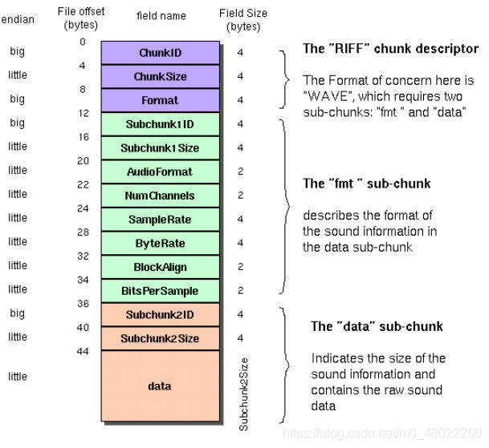

最近了解下wav文件, 记录下wave文件的格式和一些简单的音频处理
wave一般由两部分组成，一部分是头部，一部分是数据

wave文件头部一般如下所示:
| 位置 | 一般内容 | 解释 |
|---|---|---|
| 4 bytes | “RIFF” | 文件类型格式 |
| 4 bytes | filesize | 其值为filesize字段后的大小，真正的文件大小为filesize + 8 bytes |
| 4 bytes | WAVE | 文件格式 |
| 4 bytes | “fmt “ | chunk id,fmt即format，这个chunk保存了音频的采样率、声道数、采样位数等关键信息 |
| 4 bytes | fmt chunk size | fmt chunk的大小，一般有16/18/20/22/40字节 |
| 2 bytes | Audio Format | 编码格式代码 |
| 2 bytes | Num channels | 声道数，一般有1-8 |
| 4 bytes | Sample Rate | 采样率 48000HZ, 44100HZ |
| 4 bytes | Byte Rate | 传输速率，每秒的字节数，计算公式为：采样率channels采样位数/8 |
| 2 bytes | Block Align | 块对齐，告知播放软件一次性需处理多少字节，公式为： 采样位数*声道数/8 |
| 2 bytes | Bits Per Sample | 采样位数，一般有8/16/24/32/64，值越大，对声音的还原度越高 |
| 4 bytes | “data” | data chunk marker |
| 4 bytes | Data Size N | 原始音频数据的大小 |
| N bytes | Data | 原始音频数据，音频数字信号 |
这里说明一下，采样率是一秒钟采样的频率，采样位数除以8等于采样宽度，即需要几个字节凑成一个数字信号（小端序带符号)。
用python实现读取wav文件
1
2
3
4
5
6
7
8
9
10
11
12
13
14
15
16
17
18
19
20
21
22
23
24
25
26
27
28
29
30
31
32
33
34
35
36
37
38
39
40
41
42
43
class MyWave:
def __init__(self, wavpath: str) -> None:
self.wavpath = wavpath
self.wav_fp = open(wavpath, "rb")
self.readheader()
def readheader(self):
"""https://docs.fileformat.com/audio/wav/"""
self.wav_fp.seek(0)
self.file_kind_marker = str(self.wav_fp.read(4), encoding="utf-8")
self.file_size = int.from_bytes(self.wav_fp.read(4), byteorder="little")
self.file_type_header = str(self.wav_fp.read(4), encoding="utf-8")
self.format_chunk_marker = str(self.wav_fp.read(4), encoding="utf-8")
self.length_above_format_data = int.from_bytes(
self.wav_fp.read(4), byteorder="little")
self.format = int.from_bytes(self.wav_fp.read(2), byteorder="little")
self.channels = int.from_bytes(self.wav_fp.read(2), byteorder="little")
self.sample_rate = int.from_bytes(
self.wav_fp.read(4), byteorder="little")
self.byte_rate = int.from_bytes(self.wav_fp.read(4), byteorder="little")
self.block_align = int.from_bytes(
self.wav_fp.read(2), byteorder="little")
self.sample_width = int.from_bytes(
self.wav_fp.read(2), byteorder="little") // 8
self.data_chunk_marker = str(self.wav_fp.read(4), encoding="utf-8")
self.data_size = int.from_bytes(self.wav_fp.read(4), byteorder="little")
def getparams(self):
"""
读取部分参数
"""
return self.channels, self.sample_width, self.sample_rate, self.data_size // self.sample_width
def readframes(self):
"""
读取数据转振幅
"""
self.wav_fp.seek(44)
data = self.wav_fp.read()
fmt = "<i%d" % (self.sample_width)
return np.frombuffer(data, dtype=fmt)
这里对音频进行简单的振幅，声压以及频谱分析
振幅:是指振动的物理量可能达到的最大值，通常以A表示。它是表示振动的范围和强度的物理量。
声压级: 声学中，声音的强度定义为声压。计算分贝值时采用20微帕斯卡为参考值[5]。这一参考值是人类对声音能够感知的阈值下限。声压是场量，因此使用声压计算分贝时使用下述版本的公式:
其中的$p_{ref}$是标准参考声压值20微帕。 在空气中1帕斯卡等于94分贝声压级。在其他介质，如水下，1微帕斯卡更为普遍。这些标准被ANSIS1.1-1994.所收录.
频谱: 是指一个时域的信号在频域下的表示方式，可以针对信号进行傅里叶变换而得，所得的结果会是分别以幅度及相位为纵轴，频率为横轴的两张图，不过有时也会省略相位的信息，只有不同频率下对应幅度的资料。有时也以“幅度频谱”表示幅度随频率变化的情形，“相位频谱”表示相位随频率变化的情形。 一个声音信号（左图）及其对应的频谱.简单来说，频谱可以表示一个信号是由哪些频率的弦波所组成，也可以看出各频率弦波的大小及相位等信息。
详情见下方的代码
1
2
3
4
5
6
7
8
9
10
11
12
13
14
15
16
17
18
19
20
21
22
23
24
25
26
27
28
29
30
31
32
33
34
35
36
37
38
39
40
41
42
43
44
45
46
47
48
49
50
51
52
53
54
55
56
57
58
59
60
61
62
63
64
65
66
def normalize(self, data):
'''归一化'''
scale = 1.0 / (1 << (8 * self.sample_width - 1))
return data * scale
def cal_spl(self, data, seg=1024):
'''
计算声压 db
https://zh.m.wikipedia.org/zh-hans/%E5%88%86%E8%B2%9D
https://en.wikipedia.org/wiki/Sound_pressure
'''
data_len = len(data)
frame_num = int(math.ceil(data_len / seg))
volume = np.zeros((frame_num, 1))
for i in range(frame_num):
curFrame = data[i*seg: i*seg+seg]
curFrame = curFrame - np.mean(curFrame) # zero-justified
# volume[i] = 10*np.log10(np.sum(curFrame*curFrame))
prms = np.sqrt(np.mean(curFrame * curFrame))
pref = 20e-6 # 空气中 20微pa，水中 1微pa
volume[i] = 20 * np.log10(prms / pref)
return volume
def cal_spectrum(self, data, seg=1024):
"""
https://zh.m.wikipedia.org/wiki/%E9%A2%91%E8%B0%B1
计算频谱，傅立叶变换之后计算强度
"""
# print("dft begin ")
# fft_y = self.fft(data)
# fft_y = self.dft(data)
fft_y = scipy.fft.fft(data)
fft_y = self.cal_spl(fft_y, seg=seg)
return fft_y
def test_wave():
sys.argv.append("0.wav")
mw = MyWave(sys.argv[1])
print(mw)
# 读取数据
wav_data = mw.readframes()
amplitude = mw.normalize(wav_data)
nchannels, sampwidth, framerate, nframes = mw.getparams()
time1 = np.arange(0, len(amplitude)) * (1.0 / framerate)
seg = int(20e-3 * framerate) # 20ms 50ms 100ms 常用计算区间
volume = mw.cal_spl(amplitude, seg=seg)
time2 = np.arange(0, len(volume)) * seg * 1.0 / framerate
test_sz = 1024
fft_y = mw.cal_spectrum(amplitude[:test_sz], seg)
fft_x = np.arange(0, len(fft_y)) * seg * framerate / len(amplitude)
plt.subplot(311)
plt.plot(time1, amplitude)
plt.subplot(312)
plt.plot(time2, volume, label="db")
plt.legend()
plt.subplot(313)
plt.plot(fft_x, fft_y)
plt.show()
## 完整代码见test_wav.py